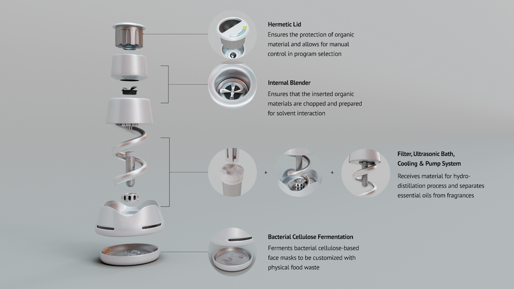
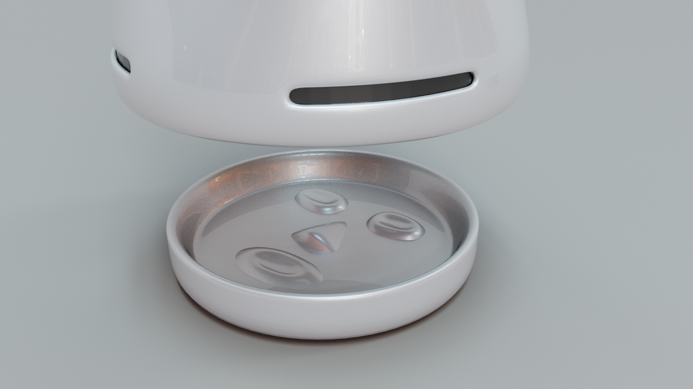
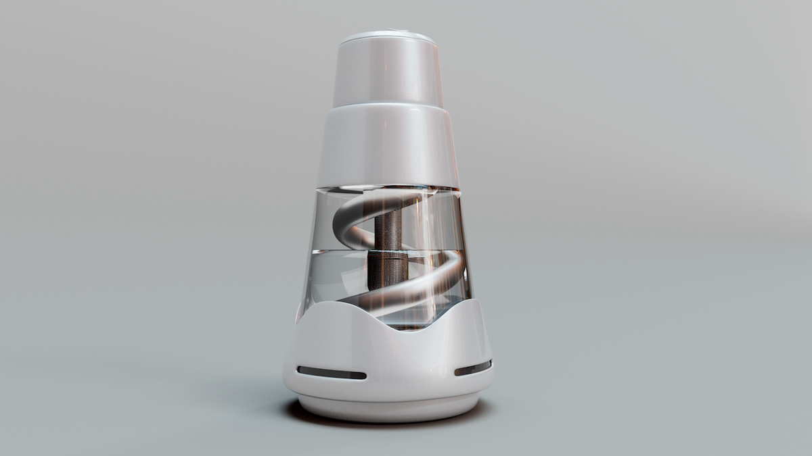

How might we make upcycling food waste more accessible to individuals and integrate food waste products into our daily lives?
Vleur is a 3-in-1 household device designed with Japanese consumers in mind. With limited countertop and storage space in Japanese kitchens, its compact form combines ultrasonic waves, maceration, and bacterial cellulose fermentation to preserve the properties of organic compounds from food waste.
The device allows individuals to customize their self-care routines with eco-friendly alternatives to essential oils and skincare products — made entirely from what would otherwise be thrown away.
Food waste doesn't disappear — it just moves downstream.
Our team conducted research through user interviews, field visits, and material experimentation. My visit to Itabashi Incineration Plant — one of Tokyo's 23 incineration facilities — revealed a critical insight: all waste, no matter how carefully sorted by individuals, ultimately ends up in incineration or landfills.
The core finding: food needs to be separated from the municipal waste stream entirely, before collection. The only viable intervention point is in the home.


Field visit to Itabashi Incineration Plant, Tokyo — one of 23 incineration facilities in the city.
Intercept waste at the source
96% of Japan's food waste ends in landfills. The only effective intervention is before it enters the stream.
Fit the Japanese kitchen
Limited countertop and storage space required a compact, multifunctional form factor.
Make upcycling desirable
Behavior change requires personal benefit. Linking waste to beauty routines creates a tangible incentive.
Preserve organic compounds
The extraction process had to maintain the active properties of food-derived ingredients for skincare use.
A device that turns kitchen scraps into a self-care ritual.
Vleur combines three processes in a single compact unit: ultrasonic extraction, maceration, and bacterial cellulose fermentation. Together they allow users to transform fruit peels, vegetable trimmings, and other organic scraps into essential oils and skincare actives — customized to their own preferences.

Technical diagram of Vleur's three-stage extraction process.


3D model by Hao Liu.
Exhibited internationally, recognized at the Biodesign Challenge.
Vleur was a semifinalist in June 2023 at the Biodesign Challenge Summit in New York — the leading international competition for biodesign at the intersection of biology, design, and sustainability - and exhibited at the Metamorphosis exhibition at Parsons School of Design. Vleur has continued to reach global recognition, with showcases at COP28 in Dubai, Design Intelligence Awards in Shanghai, and the Paris Design Awards (Eco Design category) .
The project's material research strand — focused on biological materials derived from food waste — continued as a separate body of work. See Skinside Out ↗︎.